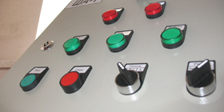
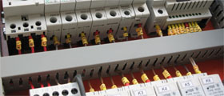

Електротехнічні щити ТОВ «СпецКомплекс» являють собою надійну конструкцію, зібрану згідно з
нормативними документами і високими стандартами якості. Акуратність збірки і якість використовуваних
комплектуючих - пріоритети, яких ТОВ «СпецКомплекс» дотримується при виробництві своїх виробів.
Відповідно до побажань замовника щити автоматики можуть комплектуватися, апаратурою провідних
європейських виробників електротехнічної продукції «Moeller» ( «EATON»), «Lovato», «Relpol», «ETI», «ABB»
або в разі, коли замовнику необхідно бюджетне рішення, деякі вузли можуть замінюватися,
без шкоди для функціональних можливостей, вузлами вітчизняного виробництва. Широкий спектр використовуваного
обладнання дозволяє Замовнику проводити гнучкий і економічно ефективний вибір пристроїв різних виробників.

При виготовленні щитів велика увага приділяється не тільки якості збірки, але і зручності експлуатації
і обслуговування виробу. Монтаж електричних ланцюгів в шафах виконується з використанням сучасних технологій.
Кінці провідників, повинні маркуватися згідно з принциповою схемою, кольоровими пластиковими кліпсами.
Провідники збираються в джгути і укладаються в перфорований кабельний короб.

За бажанням замовника ми виготовимо щит автоматики в навісному, підлоговому або вбудованому виконанні зі
стандартними або підвищеними захисними властивостями (наприклад, для установки його в приміщенні з підвищеною
вологістю). Щити стандартного виконання в обов'язковому порядку комплектуються герметичними сальниками
для вводу кабелів, в бюджетній серії передбачені отвори для введення кабелю.
Кожен з щитів може бути опціонально підготовлений для використання з системою диспетчеризації,
для чого попередньо з замовником обмовляється перелік і тип ( «сухі» контакти, протокол) необхідних сигналів,
які будуть передаватися в систему диспетчеризації. Також будь-який з щитів, за бажанням замовника може
бути обладнаний пристроєм передачі даних на диспетчерський пункт за допомогою кабельного з'єднання,
стільникового зв'язку, радіочастотного зв'язку або іншими пристроями. Більш докладно про можливості
диспетчеризації можна прочитати в розділі «Автоматизація та диспетчеризація».
Кожен щит на стадії виробництва, в обов'язковому порядку, проходить вихідний контроль якості і отримує
відповідний серійний номер. Наші фахівці проводять найсуворіший контроль правильності і надійності електричної
схеми, справності роботи апаратури і функціональних можливостей електрощитового обладнання, після чого щит
оформлюється спеціалістами повним комплектом документації (принципові електричні схеми, паспорт,
інструкція з експлуатації, гарантійний талон) і передається замовнику.